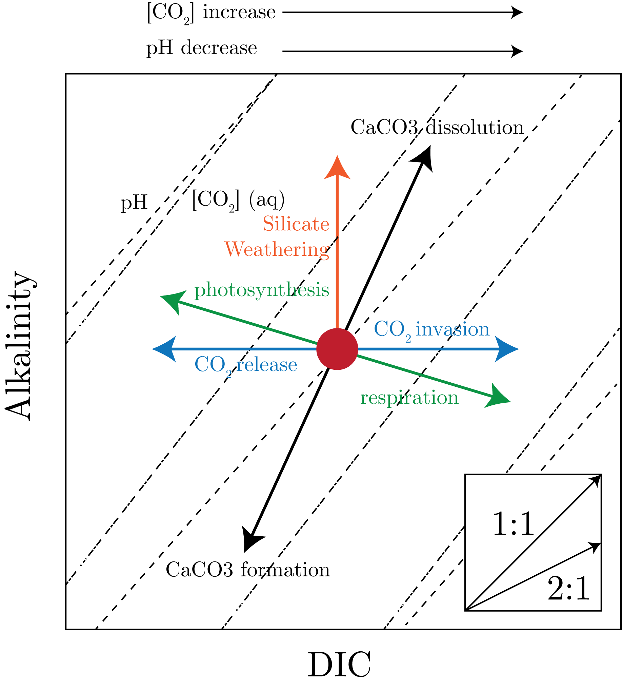

We define the total carbon in our system (inorganic) as:
\begin{equation}
DIC = C_T = \left[\text{H}_2\text{CO}_3^{\ast}\right] + \left[\text{HCO}_3^{-}\right] + \left[\text{CO}_3^{2-}\right].
\end{equation}
Then, to relate these things together we define the equilibrium constants, or the disassociation constants:
\begin{equation}
K_{a_1} = \frac{\left[\text{H}^{+}\right]\left[\text{HCO}_3^{-}\right]}{\left[\text{H}_2\text{CO}_3^{\ast}\right]} \quad \text{ and } \quad K_{a_2} = \frac{\left[\text{H}^{+}\right]\left[\text{CO}_3^{2-}\right]}{\left[\text{HCO}_3^{-}\right]},
\end{equation}
and we additionally define the disassociation constant for water:
\begin{equation}
K_w = \left[\text{H}^{+}\right]\left[\text{OH}^-\right].
\end{equation}
This is an underdetermined system, as there are 4 equations and 5 unknowns. Therefore, we define alkalinity to solve this:
\begin{equation}
TA = \left[\text{HCO}_3^{-}\right] + 2\left[\text{CO}_3^{2-}\right] + \left[\text{OH}^-\right] - \left[\text{H}^{+}\right],
\end{equation}
which then gives a determined system.
We can do the same thing for the borate system:
\begin{align}
B_T &= \left[\text{B}(\text{OH})_3\right] + \left[\text{B}(\text{OH})_4^-\right] \sim f(S), \\
K_B &= \frac{\left[\text{B}(\text{OH})_4^-\right]}{\left[\text{H}^{+}\right]\left[\text{B}(\text{OH})_3\right]}.
\end{align}
where we have stated that borate scales with salinity, i.e., it is conservative in seawater (which breaks down near freshwater inputs).
This is again a determined system.
Therefore, as long as we solve for total alkalinity, total carbon, and salinity, we can solve our system of equations.
So, we can continue to expand our definition, but we need to have some knowledge of the constants in order to solve our equation.
This all breaks down with organic acids, as we do not know a good handle on these constants.
Importantly, we note that:
\begin{equation}
\left[\text{H}_2\text{CO}_3^{\ast}\right] = K_Hp\text{CO}_2,
\end{equation}
where we assume, as before, that $\left[\text{H}_2\text{CO}_3^{\ast}\right] \simeq \left[\text{CO}_2\right]$.
Now, we can think of this as only having to measure two of the following to solve for the rest:
\begin{equation}
C_T, A_T, pH, p\text{CO}_2.
\end{equation}
This then implies that it can really be the total alkalinity and inorganic carbon that drives the carbon dioxide concentrations in the surface ocean, and thus the atmosphere.
A note on notation is that $\mu$eq is equal to the charge equivalent at carbon dioxide equivalence point.
Contouring Solutions
When comparing our contoured solutions of $C_T$ and $A_T$ against $pH$ and $p\text{CO}_2$, we note a few things.
First, the system is shifted toward $A_T$, that is there is more alkalinity than there is total carbon (which we can get from the definitions of these quantities above).
Second, we can see that we can increase $C_T$ via the addition of $\text{CO}_2$, which increases $pH$ but alkalinity remains the same.
This is ocean acidification, as the dissociation of $\text{CO}_2$ forms $\text{H}^{+}$ but forms equal amounts of $\text{H}^{+}$ ions to their receptors, $\text{H}_2\text{CO}_3^{\ast}$ and $\text{CO}_3^{2-}$, which "cancels" out the contribution, keeping alkalinity constant.
Additionally, we note that if we bring a parcel of water from the deep into contact with the equilibrium values in the surface ocean, then it will have to equilibrate correspondingly (lose or gain based on values relative to the equilibrium value).
We can look at the different processes that drive us moving around on these contours as in Fig. 1.

Fig. 1: Vectors representing different processes that move us around contoured solitions of $C_T$ and $A_T$.
We note a few things here.
First, we can increase DIC with increasing ocean acidification, which leaves alkalinity unchanged and reduces $pH$.
Second, photosynthesis removes $\text{CO}_2$, thus changing DIC, with the slope having to do with the oxidation and reduction of nitrogen in the formation of organic compounds from nitrate which consumes protons (increaseing alkalinity).
The opposite is the case for respiration, in which the production of nitrate via the oxidation of organic nitrogen produces protons, which decreases alkalinity and increases DIC.
The slope here is also dependent on the Redfield ratio.
Third, we note the different slope of the calcium carbonate vectors, the most important application being that increasing coral coverage (and thereby increasing $CaCO$_3 formation) will increase $p\text{CO}_2$ by increasing $\left[\text{CO}_2\right]$ concentrations and decreasing $pH$.
The way to actually decrease $p\text{CO}_2$, we have to add alkalinity to decrease these vectors, which is $\text{CaCO}_3$ dissolution.
We derive these slopes now.
We note for calcification that it is an important processes for the oceans, as many organisms such as coccolithophores use it to produce shells, and about 80% of surface carbon is calcium carbonate and 20% is organic carbon.
Now, we can map all of this onto the oceans, as we have done in Fig. 2.
Fig. 2: How we can map the global oceans, and the time along the global conveyor belt, into this space of $C_T$ and $A_T$.
We explain this chart now.
We start in the North Atlantic, the beginning of the conveyor belt.
The lowest DIC and Alkalinity in the ocean.
As the water subducts, organic material in the surface rains down and gets remineralized, increasing nitrate, phosphate, and DIC concentrations.
In so doing, alkalinity will be changed, especially if there are calcium carbonate shells being remineralized.
As we move along the conveyor belt, we are increasing the dissolved calcium carbonate concentrations in the water in carbon units.
We can see that the addition of alkalinity and DIC to seawater mostly falls in the 1:1 and 2:1 in the global ocean, which means that there is more organic material being remineralized than calcium carbonate (i.e., organic matter goes into DIC at a greater rate than alkalinity).
Next, we can look at these ratios in our Fig. 1 plot.
This means that as we move along the conveyor belt, we are remineralizing more organic matter, so that we are pushed along the 2:1 line, which means that we are pushed into lower $pH$ and higher $p\text{CO}_2$ regimes, as the water accumulates that carbon.
In the 1:1 case, we are much closer to constant contours of $pH$ and $p\text{CO}_2$, however there is still a slight increase.
These vectors can be decomposed into respiration and $\text{CaCO}_3$ vectors shown:
\begin{equation}
\text{Dissolution:}\quad \text{CO}_2 + \text{CaCO}_3 \leftrightharpoons \text{Ca}^{2+} + 2\text{HCO}_3^-,
\end{equation}
and
\begin{equation}
\text{Respiration:} \quad \text{CH}_2\text{O} + \text{O}_2 + \text{CaCO}_3 \leftrightharpoons \text{Ca}^{2+} + 2\text{HCO}_3^{-} + \text{H}_2\text{O}.
\end{equation}
This is to say that it is the dissolution of $\text{CaCO}_3$ in the ocean that reduces the impact of respiration, and is thereby the major stabilizing feedback that allows the ocean to moderate a near constant $pH$ through time.
The 1:1 ratio comes up in organic carbon flux to $\text{CaCO}_3$ and opal (inorganic), showing that this dissolution is really a predominate factor in the ocean.
Global Distribution
We note that one reason the ocean is able to store so much $\text{CO}_2$ is because of the stratification between the deep ocean and the surface ocean, such as through the thermocline.
We can see that we have degassing in regions of upwelling, which breaks down this stratification.
The result is that the ocean has been able to take up about 25% of all anthropogenic $\text{CO}_2$ emissions.
The distributions of this is in regions of low upwelling, so that that water is not equilibrated with the surface oceans and atmosphere.
This can be seen in transport studies, in which we can artificially impose sequestration at different depths, with the greatest sequestration times occurring at deep (stratified) depths.
The Biology
There are a few important organisms that make $\text{CaCO}_3$:
Coccolithophors: calcite
Foraminifera: calcite
Pteropods: aragonite
There is a 5:1 ratio of Mg to Ca ions in the ocean, both of which can form with carbonate.
This all has to do with the dynamics of the system, from which we can see that $\text{CaCO}_3$ is the most stable, despite the fact that it is less abundant therefore it is preferred to be incinerated by biology.
Calcium Carbonate Dynamics
We consider the reaction:
\begin{equation}
\text{CaCO}_3 (s) + \text{H}_2\text{O} \leftrightharpoons \text{Ca}^{2+} + \text{CO}_3^{2-} + \text{H}_2\text{O}.
\end{equation}
We can define the solubility product as:
\begin{equation}
K_{sp}^\ast = \frac{k_f}{k_r} = \frac{\left( \left[\text{Ca}^{2+}\right]\left[\text{CO}_3^{2-}\right] \right)_{eq} }{\{\text{CaCO}_3\}},
\end{equation}
where we define: $\{\text{CaCO}_3\} = 1$.
We can then define:
\begin{equation}
\Omega = \frac{\left[\text{Ca}^{2+}\right]\left[\text{CO}_3^{2-}\right]}{K_{sp}^\ast}.
\end{equation}
Greater, equal, and less than 1 defined as supersaturated, equilibrium, and undersaturated. Dissolutions moves in whatever direction to get to equilibrium (oversaturated means dissolution toward equilibrium).
As $\left[\text{Ca}^{2+}\right]$ is basically conservative in seawater, we can define:
\begin{equation}
\Omega \simeq \frac{\left[\text{CO}_3^{2-}\right]}{\left[\text{CO}_3^{2-}\right]_{sat}},
\end{equation}
which allows us to define:
\begin{equation}
\Delta \text{CO}_3 = \left[\text{CO}_3^{2-}\right] - \left[\text{CO}_3^{2-}\right]_{sat},
\end{equation}
where we can similarly define greater than 0 as supersaturated and less than 0 as undersaturated.
Some profiles are presented in Fig. 3.
Fig. 3: Profiles of $\text{CO}_3^{2-}$ in different regimes of saturation for calculate.
We can see from Fig. 3 most of the surface ocean is supersaturated for calcite.
This is where we see most of the calcification, at the ocean surface, which thermodynamically makes sense to reach equilibrium (as discussed previously).
As we go deeper, we see the carbonate ion going down, which is the biological carbon pump which respires organic matter, producing $\text{CO}_2$.
We then are pushed toward equilibrium with depth.
Note that calcite becomes more soluble with depth, which is the pressure effect in play.
The saturation horizon is much lower along the conveyor belt, as there is more carbonate ion in the water given the accumulation of the respire organic matter.